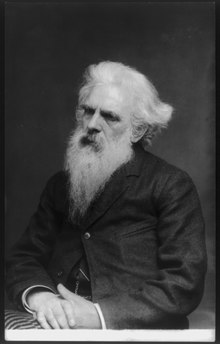

История кинематографа начала свой отсчёт 28 декабря 1895 года, когда на бульваре Капуцинок в одном из залов «Гранд кафе» прошёл первый сеанс кинопоказа.
«Прибытие поезда на вокзал Ла-Сьота»
Первый шаг к кинематографу был сделан в XV—XVII веках, когда был разработан «волшебный фонарь» — камера обскура (кроме того, ранее появился театр теней в Китае и Японии, а принцип создания изображения посредством узкого отверстия был известен ещё в античности). Сам термин «камера обскура» возник в конце XV века, а соответствующие опыты проводил Леонардо да Винчи. Волшебный фонарь для проецирования изображений на вертикальный экран стал широко известен в XVII веке. Он в упрощении представлял собой ящик с увеличительной трубой и светильником внутри. Сзади этого светильника стоял рефлектор-отражатель, между трубой и ящиком была щель, где ставился тушью нарисованный кадр. При этом изображение было статичным. Следующий шаг к кинематографу сделал в 1830 году Майкл Фарадей и его друг Макс Роджер. Вся Европа старалась изобрести аппарат, чтобы оживить рисунок. Прибор Фарадея назывался фенакистископом. К аппарату прилагался ряд последовательных картинок. Ранее учёный Жозеф Плато занимался разложением движения на фазы (например, движение человека). Когда Фарадей получил в руки эти труды, ему до завершения фенакистископа оставалось совсем немного. В результате стало возможным создать движущийся рисунок (но не реальное изображение) длительностью несколько секунд. Третий шаг состоялся в 1877 году с изобретением хронофотографии. Он стал возможен благодаря работам Луи Дагера и Жозефа Ньепса, разработавших мокрый коллодионный процесс с достаточно высокой светочувствительностью, но требующий приготовления фотоматериала непосредственно перед съёмкой. Высокая светочувствительность позволяла уменьшить время экспозиции, без чего съёмка быстрого движения была бы невозможной. В 1878 году губернатор Калифорнии Леланд Стэнфорд и фотограф Эдвард Мейбридж провели эксперимент по фотофиксированию галопа лошади. По одним данным, Стэнфорд поспорил c Мейбриджем на тему того, «отрывает во время галопа лошадь все четыре ноги от земли или нет», по другим — Мэйбридж просто выполнял заказ Стэнфорда, занимавшегося анализом движения лошади. Они установили вдоль беговой дорожки для лошадей 12 фотоаппаратов, размещённых в специальных светонепроницаемых будках. Ассистенты в будках по сигнальному свистку одновременно начинали готовить фотопластинки для съёмки. По мере готовности всех камер на дорожку выпускалась лошадь, которая скакала вдоль белой стены напротив фотоаппаратов. Затворы всех фотоаппаратов приводились в действие верёвками, натянутыми поперек трека: лошадь разрывала их, поочерёдно запуская фотоаппараты. В итоге, каждый из фотоаппаратов снимал отдельную фазу движения лошади на белом фоне стены, подчёркивающей силуэт. Это была первая попытка разложить движение на фазы. В дальнейшем Мэйбридж увеличил число фотоаппаратов до 24, а полученные снимки использовал в изобретённом им зупраксископе, дававшем движущееся изображение. Фотографирование движений животных и человека — главная сфера интересов Мэйбриджа, и за работы в этой области он получал субсидию университета Пенсильвании, с которым он сотрудничал три года. Одиннадцать томов, опубликованных под эгидой университета в 1887 году — «Движение животных: электрофотографические исследования последовательных фаз движения животных», — содержали все фотографические эксперименты Мейбриджа с 1872 по 1885 годы, и в них было помещено более ста тысяч его фотографий. На фотографиях были не только домашняя собака, кошка и лошадь, но и американский лось, олень, медведь, енот, лев, тигр, обезьяна и птицы. В 1901 году Мейбридж выпустил книгу «Фигура человека в движении». Он возвратился в Англию и больше почти не занимался фотографией. Умер он в своём родном городе Кингстоне на Темзе в 1904 году.

Леланд Стэнфорд
Эдвард Мейбридж